Aquella vez · Manual de español
Unidad 8
Recuerdos, salud y planes

Cuando era niño
Lee el texto y contesta
Tengo muchos recuerdos de cuando tenía diez años. Yo vivía con mis padres y mis abuelos. Tenía una gata y siempre jugaba con ella. Iba a la escuela en autobús y cuando salía iba al entrenamiento de básquet.
Los fines de semana jugaba al fútbol con mis amigos y mi hermano. A veces jugaba con mi abuelo. Cuando volvía de la cancha, comíamos empanadas o asado toda la familia.
Me acuerdo que venían a visitarme mis amigos muy a menudo. Me gustaba mucho mirar dibujitos y dibujar historietas. Rara vez veía películas, no me gustaban mucho.
Creo que a los diez años era feliz.
EjercicioPreguntas
- ¿Cuántos años tenía la persona del texto?
- ¿Con quién vivía?
- ¿Qué mascota tenía?
- ¿Con quién jugaba siempre?
- ¿Cómo iba a la escuela?
- ¿Adónde iba después de la escuela?
- ¿Qué hacía los fines de semana?
- ¿Con quién jugaba al fútbol?
- ¿Qué comía la familia?
- ¿Quiénes venían a visitarlo?
EjercicioCompleta las frases con la forma correcta del verbo entre paréntesis.
Cuando yo era niño, mucho en casa. (estudiar)
Antes, mi abuela en un pueblo pequeño. (vivir)
Nosotros juntos todos los domingos. (comer)
De joven, Robert muy reservado. (ser)
Tú siempre la misma telenovela por la tarde. (ver)
Ellos al mercado todos los sábados. (ir)
Cuando vivíamos en la fortaleza, nosotros el cielo desde la torre. (ver)
Ella café mientras escuchaba música. (tomar)
Vosotros español tres veces por semana. (estudiar)
El pretérito imperfecto
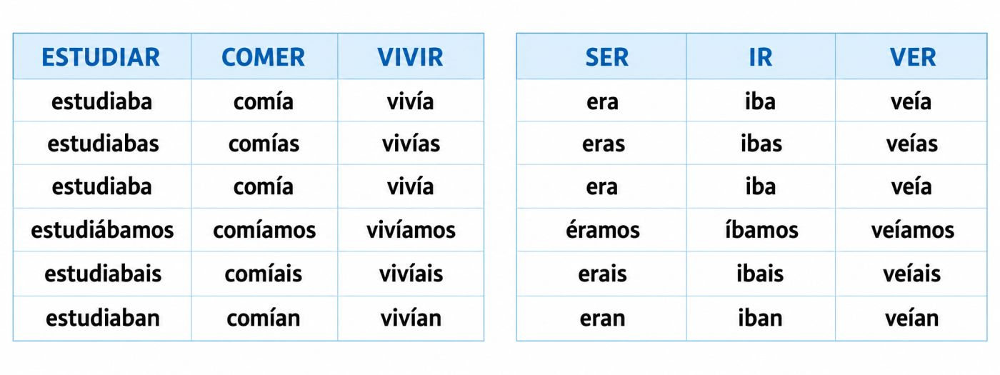
Lee el diálogo y contesta
Gramática: hábitos y descripciones en pretérito imperfectoLuisExtraño a mi ex.
Robert¿A tu ex? ¿Por qué?
LuisPorque ella era muy tierna, cariñosa y dulce.
Robert¿De verdad?
LuisSí. Siempre me escribía mensajes bonitos. Me decía: "Te quiero mucho", "Pienso en ti", "Eres muy especial".
RobertBueno, eso suena muy lindo. ¿Y tu novia nueva?
LuisMi novia nueva es increíble.
Robert¿Ah, sí?
LuisSí. Habla tres idiomas, toca el piano, baila tango, cocina muy bien, practica yoga y además sabe arreglar computadoras.
Robert¡Es perfecta!
LuisSí, casi perfecta.
Robert¿Por qué casi?
LuisTiene un pequeñito problema.
Robert¿Cuál?
LuisNo me ama.
RobertAh… bueno. Eso no es un detalle menor.
LuisExacto. Es solo un pequeño problema sentimental.
RobertPequeño, pequeño… como perder la casa y decir que falta una silla.
EjercicioVerdadero o falso
- Luis extraña a su ex.
- La ex de Luis era tierna, cariñosa y dulce.
- La ex de Luis nunca le escribía mensajes bonitos.
- La novia nueva de Luis habla tres idiomas.
- La novia nueva de Luis toca el violín.
- La novia nueva de Luis cocina muy bien.
Ejercicio4. Completa con los marcadores temporales
Marcadores temporales: antes — a los diez años — una vez — ayer — el mes pasado — de joven
a. iba a bailar a la discoteca.
b. me caí de la bicicleta.
c. estuvimos de vacaciones en Bolivia.
d. tenía una mejor amiga.
e. fui al cine por primera vez.
f. vino a visitarme Juan.
Ejercicio5. Hablemos
a. ¿Dónde vivías a los diez años?
b. ¿Qué hacías con tus amigos cuando tenías vacaciones?
c. ¿Cuál era tu materia preferida en la escuela?
d. ¿Con quién pasabas los fines de semana?
e. ¿Qué dibujos animados te gustaba ver en la televisión?
Me duele la cabeza
Aprende las partes del cuerpo y del rostro
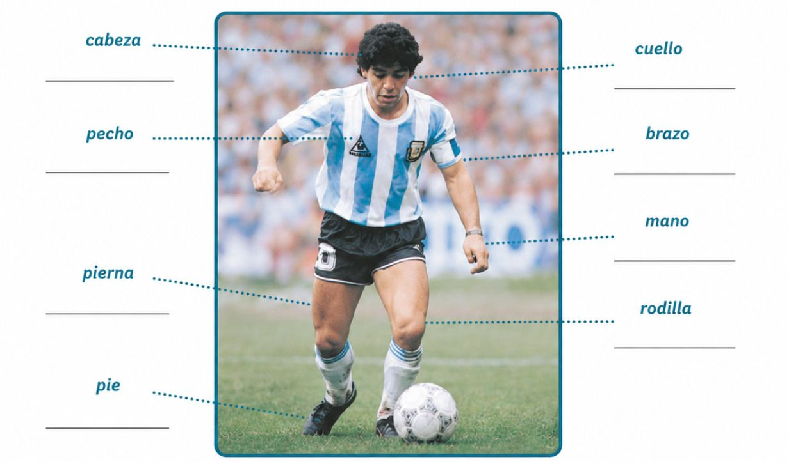
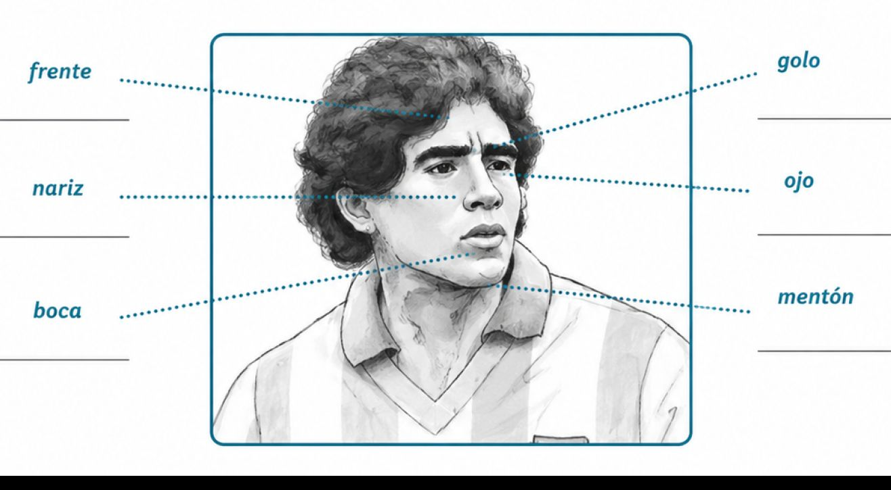
Ejercicio2. Completa las oraciones
a. A María le duelen los porque lee mucho.
b. Carlos es jugador de fútbol y cuando juega muchas horas le duelen las .
c. La jirafa tiene el larguísimo.
d. Maradona les hizo a los ingleses un gol tramposo, la famosa de Dios.
e. Callate la . No hablés así de María.
f. Me mucho la cabeza. Tengo que dormir.
EjercicioLee la pista y escribe la parte del cuerpo correcta.
La usamos para pensar. →
Los usamos para ver. →
La usamos para hablar, comer y sonreír. →
La usamos para escuchar. →
Está entre la cabeza y los hombros. →
EjercicioRelaciona los remedios con los problemas de salud
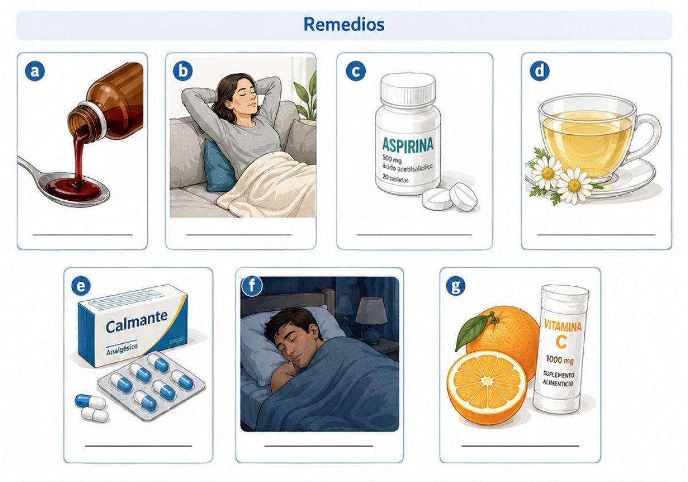
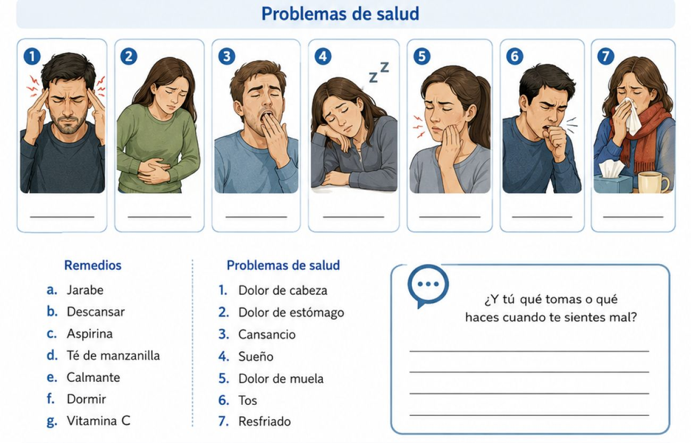
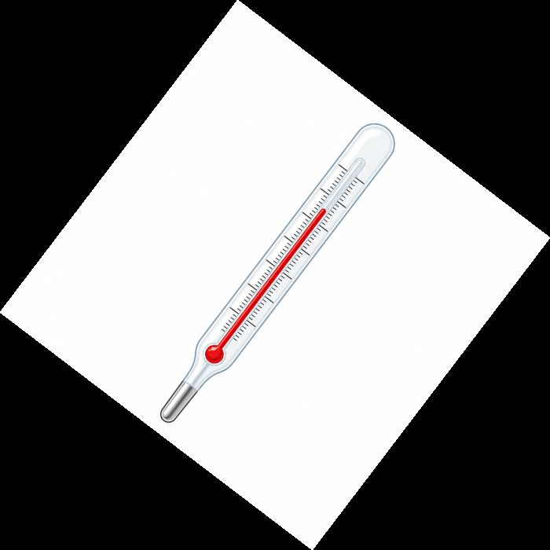
EjercicioContesta. ¿Y tú qué tomas?
¿Qué tomas cuando te duele la cabeza?
¿Qué tomas cuando tienes tos?
¿Qué haces cuando estás cansado/a?
¿Qué vas a hacer mañana?
Marcos y Robert hablan de sus planes
Lee el diálogo y luego contesta las preguntas.
MarcosHola, Robert. ¿Qué vas a hacer mañana?
RobertMañana voy a revisar la fortaleza. También voy a hablar con sus habitantes. ¿Y tú?
MarcosYo voy a subir al tren fantasma otra vez.
Robert¿Otra vez? ¿No tienes miedo?
MarcosUn poco, sí. Pero voy a buscar una nueva estación. Alicia dice que vamos a encontrar una pista importante.
RobertEntonces vas a vivir otra aventura.
MarcosSí. Y creo que vamos a resolver un misterio. ¿Tú qué vas a hacer después de revisar la fortaleza?
RobertVoy a organizar los alimentos. Después voy a caminar por la muralla y voy a pensar en el futuro.
MarcosSiempre piensas en el futuro.
RobertEs necesario. Si no hacemos planes, la fortaleza no va a crecer.
MarcosYo también voy a hacer planes. Primero voy a hablar con los pasajeros. Después voy a volver a mi vagón y voy a escribir todo en mi cuaderno.
RobertBuena idea. Yo voy a escribir un informe sobre la comunidad.
Marcos¿Y por la noche?
RobertPor la noche voy a descansar un poco. Tal vez voy a tomar mate y voy a mirar el cielo desde la torre.
MarcosYo no sé si voy a descansar. En el tren fantasma nunca se sabe.
RobertEntonces vas a estresarte.
MarcosSí, mucho. Y si aparece algo raro, voy a correr.
RobertEso también es un buen plan.
Marcos¿Y tú, Robert? Si aparece un problema en la fortaleza, ¿qué vas a hacer?
RobertVoy a proteger a mi gente. Voy a buscar una solución y no voy a rendirme.
MarcosMe gusta tu plan.
RobertY a mí me gusta el tuyo. Tú vas a descubrir el misterio del tren, y yo voy a construir un lugar seguro.
MarcosEntonces los dos vamos a tener mucho trabajo.
RobertSí, pero también vamos a tener una buena historia para contar.
EjercicioPreguntas
- ¿Con quién habla Marcos?
- ¿Qué va a hacer Marcos mañana?
- ¿Quién va a acompañar a Marcos en el tren fantasma?
- ¿Qué va a hacer Marcos en el tren?
- ¿Qué va a revisar Robert?
- ¿Qué va a organizar Robert en la fortaleza?
EjercicioDescribe lo que van a hacer los personajes. Usa la lista de infinitivos.

- armar el cubo Rubik
- preparar comida
- escribir en el cuaderno
- hablar con el zorro
- andar en moto
- tirar las cartas
- leer las cartas
- investigar un caso
- mirar una pista
- buscar información
- resolver un misterio
- abrazar a su marido
- acariciar a su mascota
- recorrer el tren fantasma
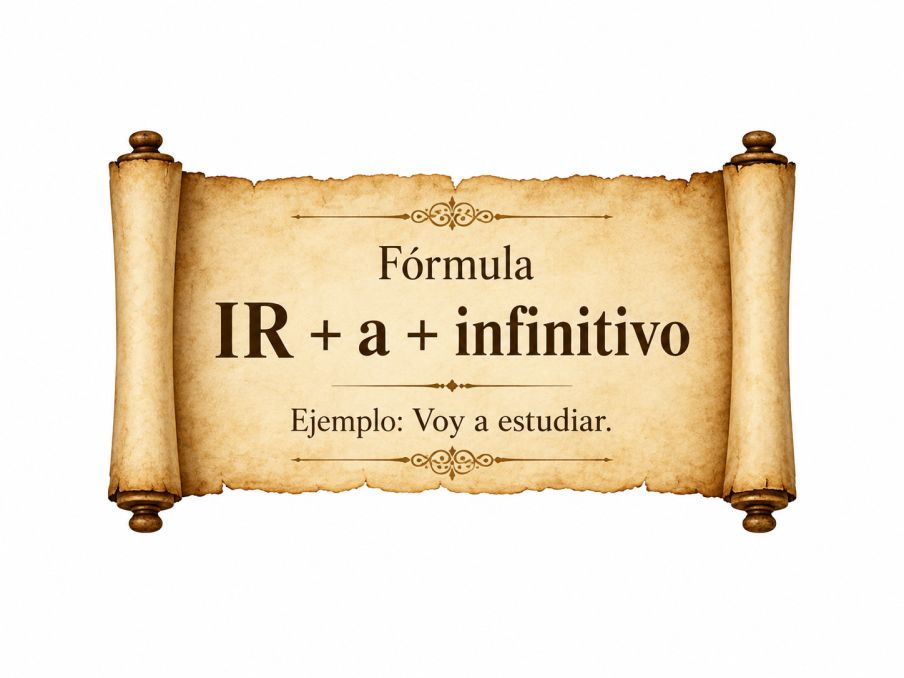
Ir a + infinitivo es una perífrasis verbal que se usa para hablar del futuro inmediato, planes e intenciones.
Después de la clase voy a ir al supermercado.
Mañana voy a descansar. No voy a salir de casa.
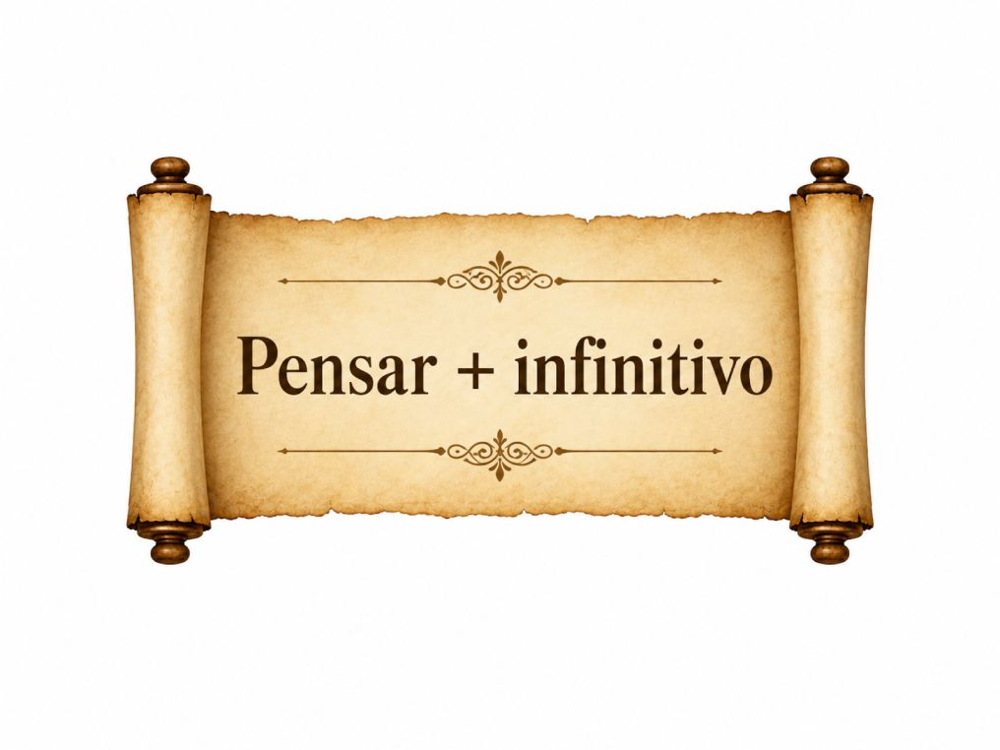
Pensar + infinitivo es una perífrasis verbal que se usa para expresar solo intenciones. Se usa menos que la anterior.
Este año pienso escribir muchos libros.
Pienso viajar más y preocuparme menos.
EjercicioCompleta con ir a + infinitivo o pensar + infinitivo
Mañana Robert la fortaleza. (revisar)
Marcos subir al tren fantasma otra vez. (subir)
Esta tarde nosotros estudiar español. (estudiar)
Ella escribir una carta muy importante. (escribir)
¿Tú hablar con Alicia después de la clase? (hablar)
Ellos buscar una solución al problema. (buscar)
Nadia consultar un astrólogo profesional.
José participar en la carrera de Fórmula uno.
Gramática
El verbo DOLER
Usamos doler para hablar de dolor físico.
Estructura: me / te / le / nos / les + duele / duelen + parte del cuerpo
| Persona | Forma |
|---|---|
| A mí | me duele / me duelen |
| A ti | te duele / te duelen |
| A él / a ella / a usted | le duele / le duelen |
| A nosotros / a nosotras | nos duele / nos duelen |
| A ellos / a ellas / a ustedes | les duele / les duelen |
DUELE: usamos duele con una parte del cuerpo en singular.
Me duele la cabeza. · Te duele el brazo. · Le duele el cuello. · Nos duele la espalda. · Les duele la rodilla.
DUELEN: usamos duelen con una parte del cuerpo en plural.
Me duelen los ojos. · Te duelen las piernas. · Le duelen las manos. · Nos duelen los pies. · Les duelen los brazos.
Ejemplos: Me duele la cabeza. · A Marcos le duelen los ojos. · A Nátasha le duele la mano. · A Luis le duelen las piernas. · A los estudiantes les duele la cabeza.
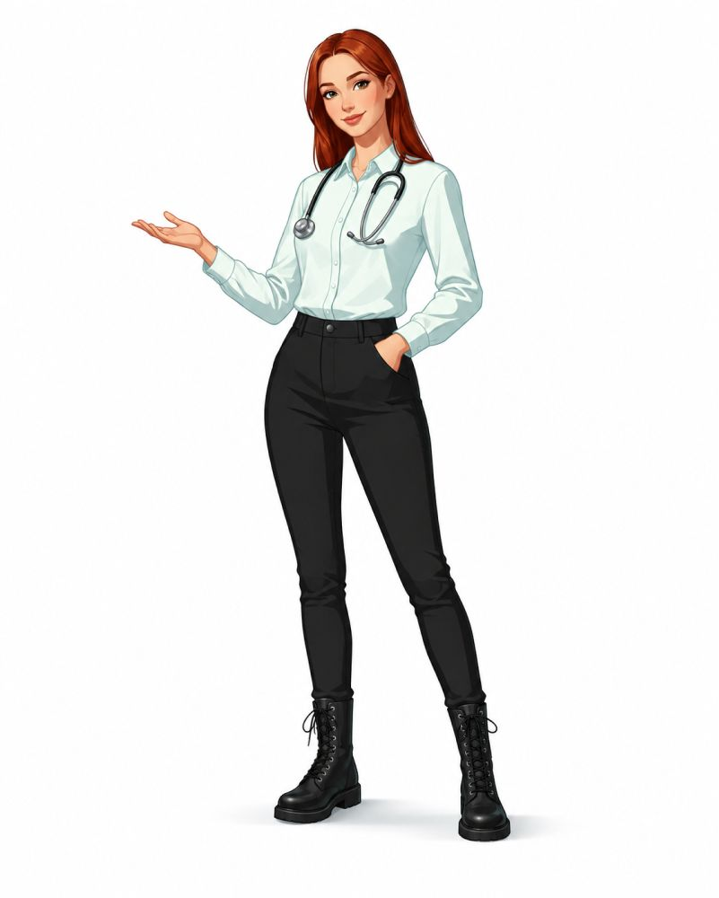
EjercicioEjercicio 1: Completa con duele o duelen
Me la cabeza.
A Marcos le los ojos.
A Nátasha le la mano.
A Luis le las piernas.
A Alicia le el cuello.
A Roberto le los brazos.
A María le la espalda.
A Carlos le los pies.
Nos la garganta.
Les las rodillas.
EjercicioEjercicio 2: Completa las frases
Usa: me, te, le, nos, les + duele / duelen
A mí la cabeza.
A ti los ojos.
A Marcos el brazo.
A Nátasha las manos.
A nosotros los pies.
A los estudiantes la espalda.
A Alicia el cuello.
A Luis las piernas.
A ustedes la garganta.
A Robert la rodilla.
El pretérito imperfecto
Usamos el pretérito imperfecto para hablar de hábitos, rutinas y descripciones en el pasado. Se usa mucho con estas expresiones:
antes · cuando era niño/a · cuando tenía diez años · de pequeño/a · todos los días · siempre · a veces · los fines de semana
Ejemplos: Antes hablaba mucho con mis amigos. · Cuando era niño, jugaba al fútbol. · Los fines de semana visitábamos a mis abuelos.
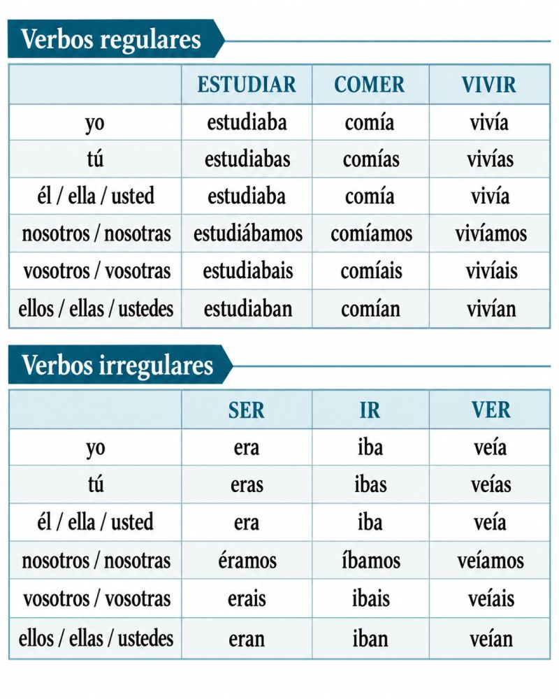
IR A + INFINITIVO
Usamos ir a + infinitivo para hablar de planes o acciones futuras.
Estructura: ir + a + infinitivo
| Persona | Ejemplo |
|---|---|
| yo | voy a estudiar |
| tú | vas a estudiar |
| él / ella / usted | va a estudiar |
| nosotros/as | vamos a estudiar |
| vosotros/as | vais a estudiar |
| ellos/as / ustedes | van a estudiar |
Recuerda: después de ir a, usamos el verbo en infinitivo.
voy a comer · vas a leer · va a trabajar · vamos a estudiar · vais a viajar · van a bailar
Ejemplos: Luis va a jugar al cubo Rubik. · Nátasha va a preparar comida. · Natalia Rosa va a escribir en su cuaderno. · Robert va a andar en moto. · Alicia va a tirar las cartas. · Marcos va a investigar un caso.
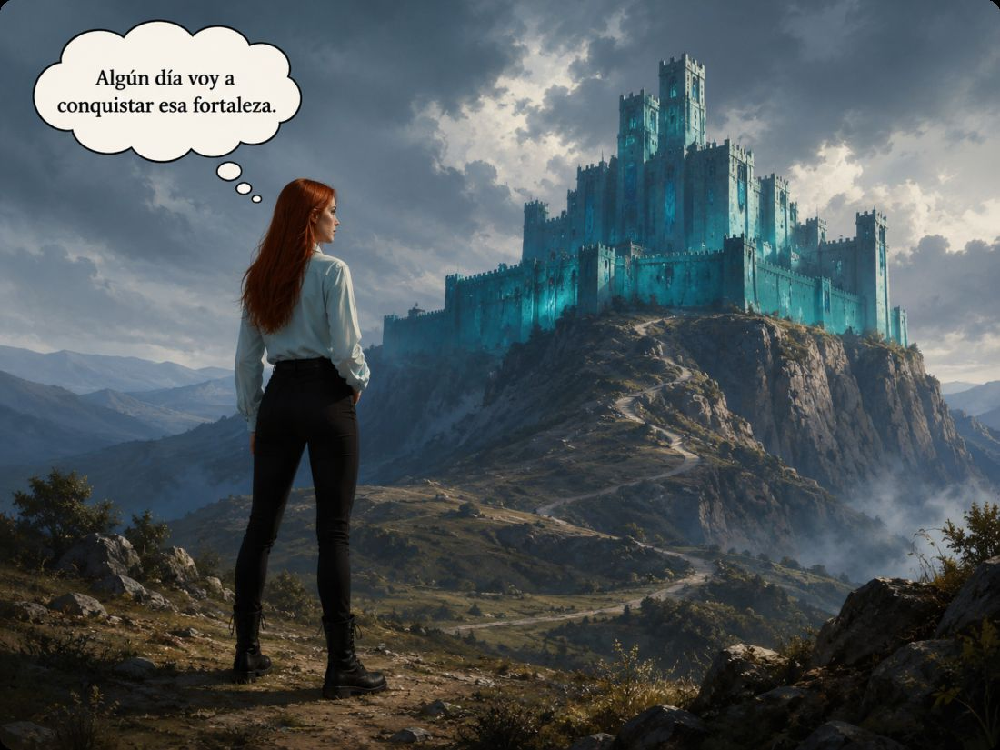
Cultura
La vida en las colonias españolas
Lee el texto y contesta.
En las colonias españolas, muchas personas vivían en ciudades pequeñas, pueblos y zonas rurales. Las ciudades tenían una plaza central, una iglesia, casas importantes y calles ordenadas. Muchas familias trabajaban en el campo, en tiendas o en talleres.
La sociedad era muy desigual. No todas las personas tenían los mismos derechos. Algunas personas vivían con más comodidad, pero otras trabajaban mucho y tenían una vida difícil.
En esa época existía el sistema de castas. Este sistema dividía a las personas según su origen familiar. Los españoles nacidos en España tenían más poder. Los criollos, hijos de españoles nacidos en América, también tenían importancia, pero no siempre podían ocupar los cargos más altos.
También había mestizos, indígenas, africanos y personas de diferentes mezclas. Muchas veces, estas personas tenían menos oportunidades. Algunas trabajaban en el campo, en minas, en casas o en oficios. El lugar de una persona en la sociedad muchas veces dependía de su origen.
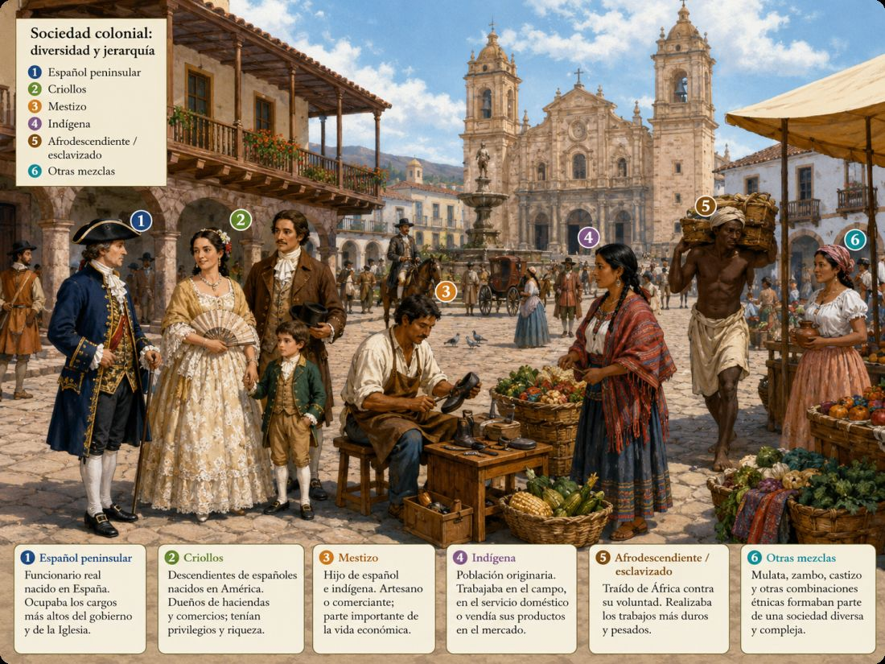
La vida cotidiana era diferente según la clase social. Las familias ricas vivían en casas grandes y tenían sirvientes. Las familias pobres vivían en casas más simples y trabajaban todos los días. Los niños a veces ayudaban a sus padres y no siempre iban a la escuela.
En las colonias, la religión también era muy importante. Muchas personas iban a misa, celebraban fiestas religiosas y seguían las normas de la Iglesia.
El sistema de castas marcaba la vida de muchas personas. Hoy sabemos que ese sistema era injusto, porque las personas no tenían las mismas posibilidades. Todos los seres humanos merecen respeto y derechos iguales.
EjercicioPreguntas sobre el texto
- ¿Dónde vivían muchas personas en las colonias españolas?
- ¿Cómo eran las ciudades coloniales?
- ¿Qué era el sistema de castas?
- ¿Quiénes tenían más poder en la sociedad colonial?
- ¿Por qué el sistema de castas era injusto?
Historieta
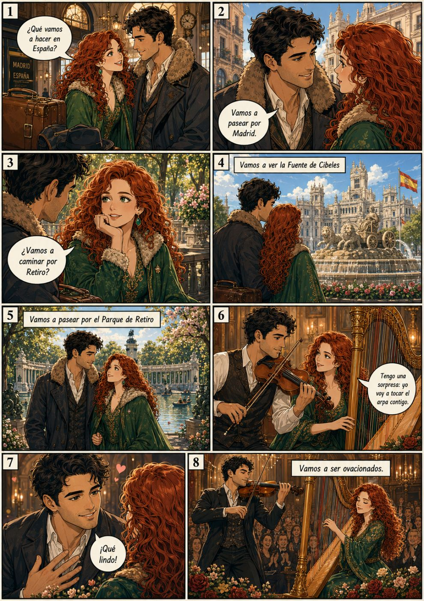
Notas importantes
Unidad 8 · Gramática y cultura
En esta unidad revisamos cómo contar el pasado con más detalle. Aprenderemos a describir hábitos, planes y sensaciones de manera clara para que tus historias sean más interesantes.
Pretérito imperfecto
Usamos el pretérito imperfecto para hablar de hábitos y descripciones en el pasado. Por ejemplo:
1. Hábitos: Yo estudiaba todos los días antes de dormir.
2. Descripciones: Ella era muy amable y siempre sonreía.
Doler
El verbo doler cambia según el sujeto: duele para una parte del cuerpo y duelen para varias.
1. Duele: Me duele la cabeza.
2. Duelen: Me duelen los pies.
Pronombres
Recuerda que los pronombres personales se usan para referirte a ti mismo o a alguien más.
Yo: Yo estudio. · Tú: Tú juegas. · Él/ella/usted: Él come. · Nosotros/as: Nosotros ayudamos. · Vosotros/as: Vosotros estudiáis. · Ellos/as: Ellos trabajan.
Planes e intenciones
Usamos ir a + infinitivo y pensar + infinitivo para hablar de lo que vas a hacer.
1. Ir a + infinitivo: Voy a estudiar esta tarde.
2. Pensar + infinitivo: Pienso viajar el próximo año.
Cultura: la vida en las colonias españolas
En las colonias españolas, la vida era muy diferente según la ciudad y la condición social. Las ciudades importantes, como México o Lima, tenían calles empedradas, iglesias grandes y casas de piedra. En cambio, en el campo y en muchas aldeas, la gente vivía en casas más sencillas y trabajaba la tierra.
La desigualdad era muy grande: había personas muy ricas que vivían con lujos y otras que tenían muy poco. Esta desigualdad marcó la forma en que se organizaban las ciudades y la vida cotidiana.